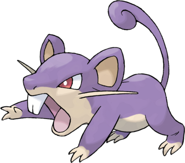

Rattata possède deux moustaches qui lui donnent plus de stabilité pour être plus rapide ; soit pour attaquer, soit pour fuir. Il a deux oreilles dont l'ouïe peut porter très loin en plus d'yeux rouges à vue perçante. Sa bouche est munie de deux grandes dents. Son ventre est complètement blanc pâle et il possède une longue queue violette qui se retourne sur elle-même.